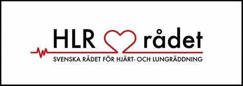

Jag rekommenderar att ni gör webbutbildningen som jag skickar med i kursinbjudan
för att ni ska ha lie förkunskaper inför utbildningen. Under den här kursen kommer
jag att guida dig genom exakt hur du ska agera vid ett hjärtstopp och starta HLR.
Du kommer även att lära dig hur du använder en hjärtstartare, en avgörande färdighet
för att öka chanserna till överlevnad vid en nödsituation. Vi kommer också att täcka
hanteringen av plötsliga luftvägsstopp, en situation som kan uppstå när ett barn sätter
i halsen. Genom praktiska övningar på HLR-dockor kommer du att få möjlighet att öva och
förstå de nödvändiga teknikerna för att genomföra effektiv HLR. Min kurs är framförallt
inriktad på praktiska övningar och efterliknar verkliga situationer så nära som möjligt.
Målet är att du efter avslutad kurs ska känna dig helt trygg att agera i dessa akuta
situationer och vara redo att göra skillnad. Kursen tar cirka 2 timmar och är en investering
i din förmåga att vara en hjälte när det verkligen behövs.
Kontakta mig nu och bli en del av vårt nätverk av beredda och kunniga livräddare för barn!
Kostnad 600kr per person.
Till hösten kommer jag även erbjuda kurs i vuxen-HLR.
